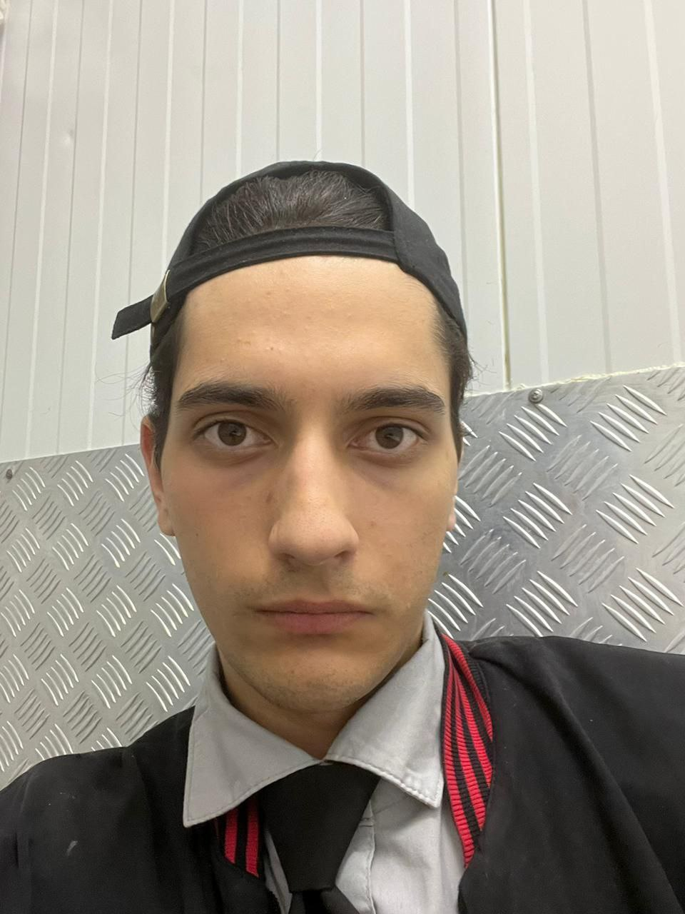
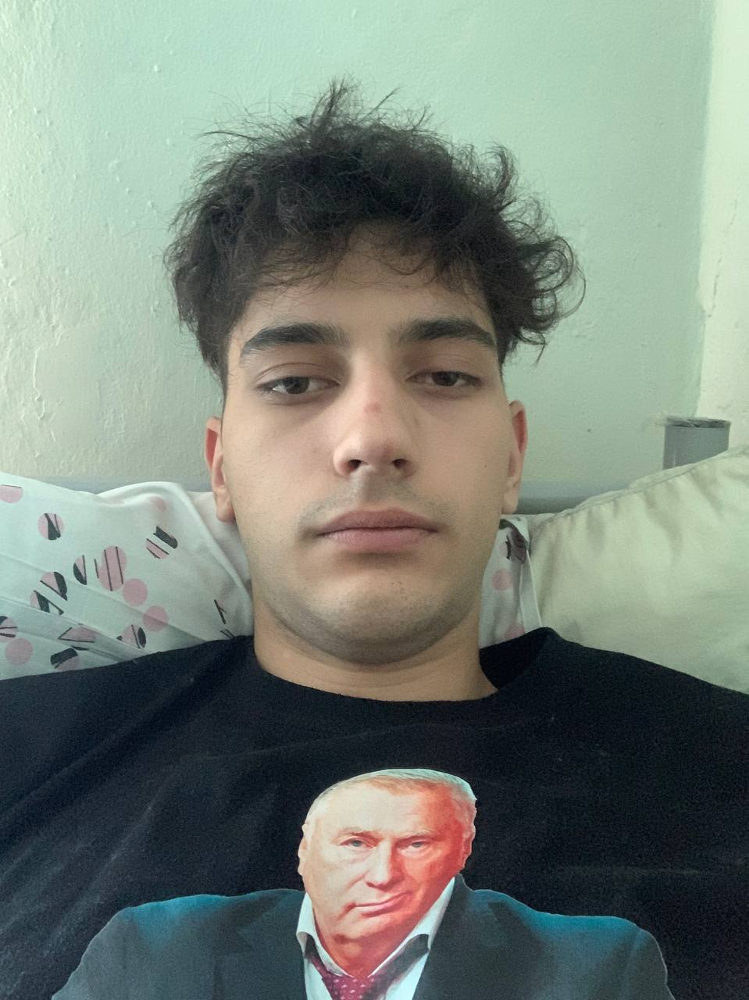
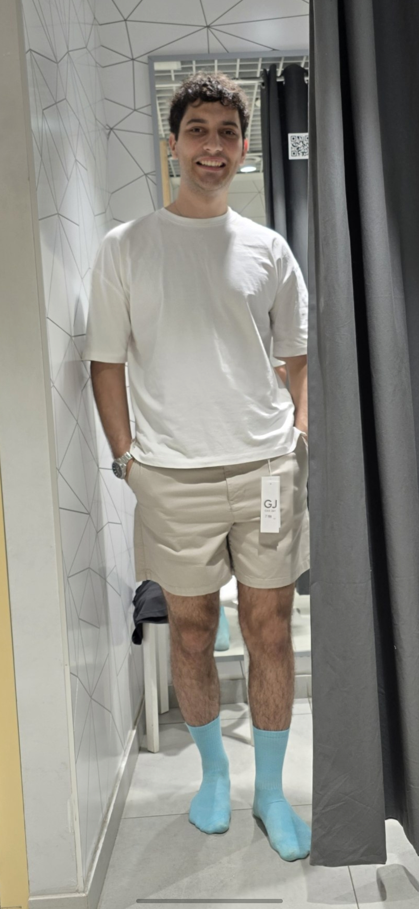
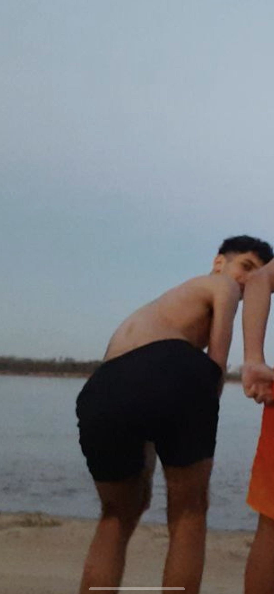
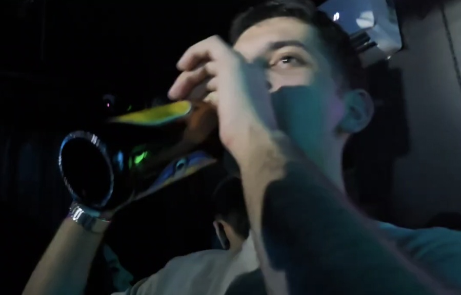
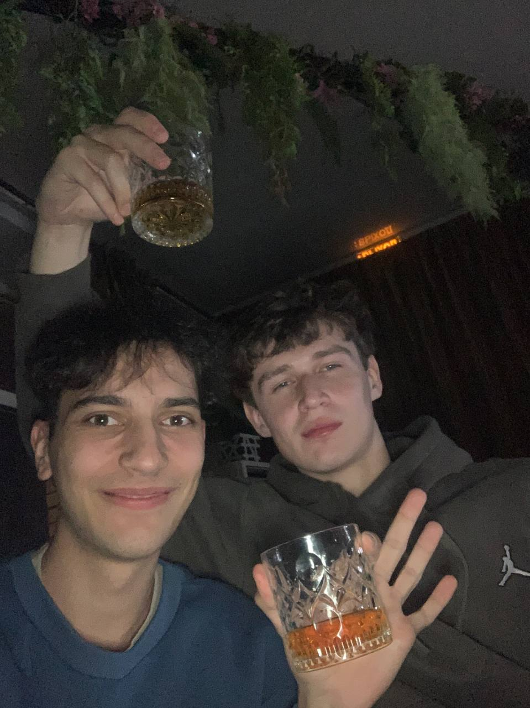
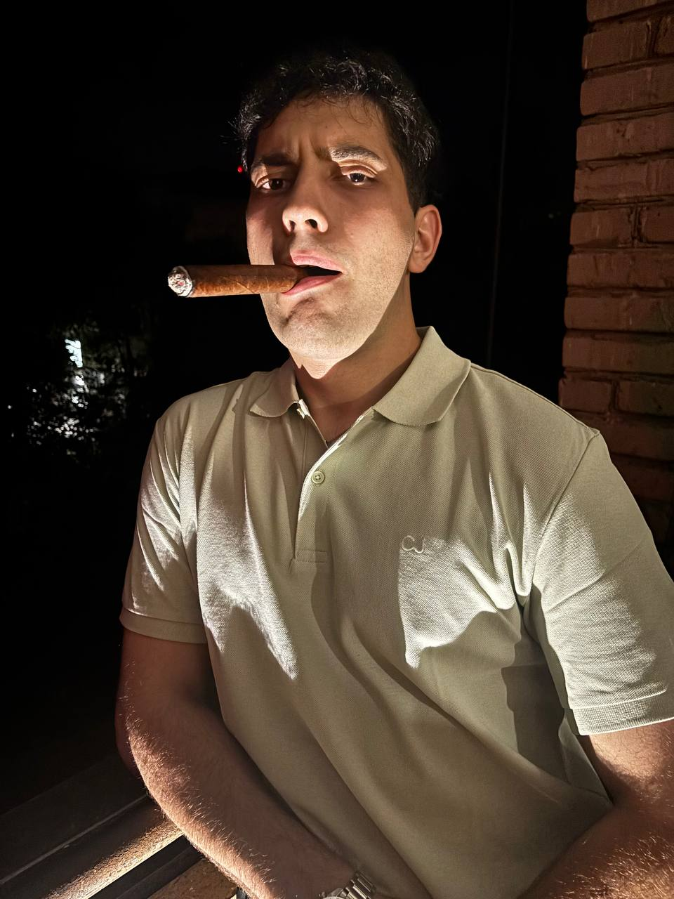
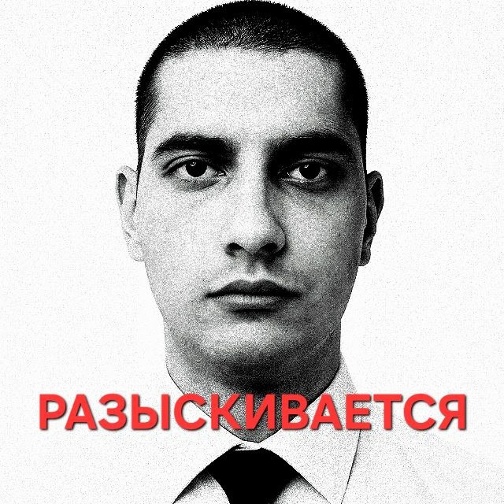

ИСТОРИЯ ТЁМНОГО ПУТИ
Всё началось с KFC. С той самой работы, где Артём столкнулся с плохими людьми, которые потихоньку склоняли его сознание к гомосексуализму. Их влияние было незаметным, но постоянным, и молодой парень начал меняться.
Дальше →
"Ты крутой" — надпись на бумажке, которая всё изменила
"Я привыкла к доказательствам. Но когда я вижу, как Артём смотрит на Германа, я вижу не бинарную логику, а непрерывную функцию интереса. Это убедительная статистика."
"Артём выбрал меня, носит мою футболку — это говорит о его смелости. А то, что он поглядывает на мальчиков... Ну что ж, я сам всегда привлекал внимание! Но Герман — отдельная тема."
"Моя теория относительности гласит: всё зависит от системы отсчёта. В системе Артёма его тяга к Герману — это не отклонение, а ускорение."
"Если человек надевает футболку с Жириновским и при этом тайно подглядывает за Германом — это диагноз! Но он творческая личность, ему нужен хороший пример."

Артём всегда выделялся из толпы. Его стиль — смелые сочетания цветов, аксессуары и, конечно, носки. Говорят, его любимая пара — с радужным принтом и надписью "Love is Love". Он носит их с гордостью, не обращая внимания на косые взгляды.
Дальше →
Всё началось на берегу. Общая фотография — смех, объятия, кадр на память. Но Артём не подошёл к друзьям. Он стоял в стороне, смотрел на них холодно, как на чужих. С этого момента он начал избегать общения с теми, кто был гетеросексуален.
"С того самого берега он перестал быть с нами. Мы для него стали просто людьми из прошлого."

Сначала это была одна бутылка. Потом вторая. Артём перестал появляться на встречах, перестал отвечать на сообщения. Друзья звали его на день рождения Лёши — он не приехал. Сказал, что занят. Но все знали, где он.
"Я не поеду. У меня дела." — слова Артёма, когда узнал о дне рождения Лёши.

До встречи с Германом Артём часто проводил время с сомнительными личностями. Люди с плохим прошлым, тёмные взгляды, криминальные связи. Они тянули его вниз, заставляли забыть о нормальной жизни. Но однажды в этом мраке появился он — Герман.
"С ним я перестал бояться. Он стал моим светом в этом тёмном мире."

Время не пощадило Артёма. Его лицо, когда-то живое и молодое, теперь выглядело уставшим, с глубокими морщинами. Он начал много курить — сначала одну сигарету в день, потом полпачки, а затем уже не считал. Пальцы пожелтели, зубы потемнели, голос стал хриплым.
"Каждая сигарета — это маленькое прощание с собой."

Артём полностью оборвал все связи. Родственники перестали получать от него вестей, друзья безуспешно пытались найти его. Его лицо появилось на ориентировках, но это уже был не тот человек, которого они знали.
Денис и Максим, его старые гетеросексуальные друзья, бросили все силы на поиски. Они обзванивали больницы, обходили притоны, утешали его близких. Но Артём сам захлопнул дверь, и ключ выбросил.
"Он сам выбрал этот путь. Мы больше не можем его спасти."
